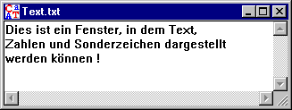

In diesem Fenster wird ein Dokument angezeigt, welches aus normalem Text (ohne nicht-anzeigbare Sonderzeichen) besteht. In einem solchen Dokument kann Text auch gesucht und ersetzt werden (siehe dazu Menü Bearbeiten).

Über das Menü Ansicht können Sie die Anzeige des Textfensters ändern:
| Alphabet | Graut nicht-Alphabet-Zeichen im aktiven Fenster aus. |
| Zeilenende | Schaltet die Anzeige von Leerzeichen als besondere Zeichen ein oder aus. |
| Zeilenumbruch | Schaltet die Anzeige von Zeilenumbrüchen als besondere Zeichen ein oder aus. |
| Leerzeichen | Schaltet die Anzeige von Leerzeichen als besondere Zeichen ein oder aus. |
| Schriftart | Ändert die Schriftart für das aktive Fenster. |
Mit dem Menüeintrag Ansicht \ Schriftart kann man schnell sinnvolle Größen und den Fonttyp (monospace oder proportional) einstellen. So ist "Courier 10" z.B. gut, um sich den Output der ADFGVX-Chiffre anzusehen.
Der Texteditor erlaubt, dass man auch Dateien, die nicht druckbare, aber anzeigbare Zeichen enthalten, im Text-Modus ansehen kann.
Die Anzeige eines Dokuments mit nicht-anzeigbaren Sonderzeichen geschieht in einem Fenster für hexadezimale Ein-/Ausgaben.
Die Darstellung eines Textdokuments in einem Fenster für hexadezimale Ein-/Ausgaben kann durch den Menüeintrag Ansicht \ Als HexDump erzwungen werden.
Bemerkung:
Die Zahlenwerte (dezimal und hexadezimal) der verschiedenen ASCII-Zeichen finden Sie in der ASCII-Tabelle.